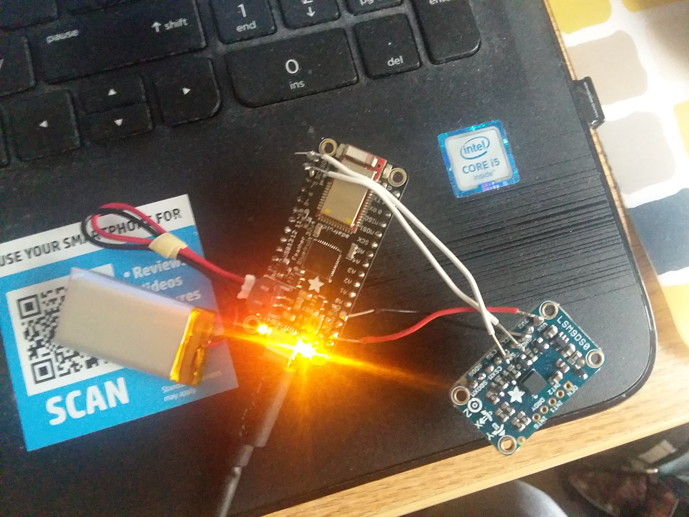

Group Progress
Got a lot of individual parts completed for the project. We are now working on how different components will start integrating with each other. Have the phase vocoder running, the hardware sending data, and the app has a simple UI.
Individual Progress
Robert Keller: Finished the phase vocoder with info used from Bill Sethares from the University of Wisconson-Madison. Phase Vocoder (Sethares) All of it is currently in Matlab and has started converting it to C++. The phase vocoder works by taking a song as an input and uses breaks the file into different chunks using windowing. From there, it processes each chunk using an stft. Then, it manipulates each chunk in the frequency domain to alter the phase. Finally, each processed chunk is then converted back into the time domain and summed to create the final signal. Also he has started working on how to implement first 3 main modes of our project: Mix, Match, and Manual.
Julian Trulear: Finished wiring between Bluefruit LE and LSM9DS0 and have power working correctly. Got data from the LSM9DS0 to the Bluefruit and then to the phone via Bluetooth. Adafruit created an app that reads data from the Bluefruit, which can be read on the phone. This data is read from the Serial Data port on the Bluefruit, and since that is hooked up to the LSM9DS0, it is reading data from there.
David Yuan: Has the functionality of the app working on a basic level with buttons laid out for the different modes when they are implemented. Has started working with Julian so that hardware can communicate with our app at a basic level. Started working on a way so that on our app there can be a button that is pressed to retrieve data points from the gyroscope.
Goals for Next Week
Start putting components together and making sure hardware can communicate with Android App. Get together a simple button that can take individual measurements from the LSM9DS0 gyroscope data. Have the first 3 main modes working on a very basic level.